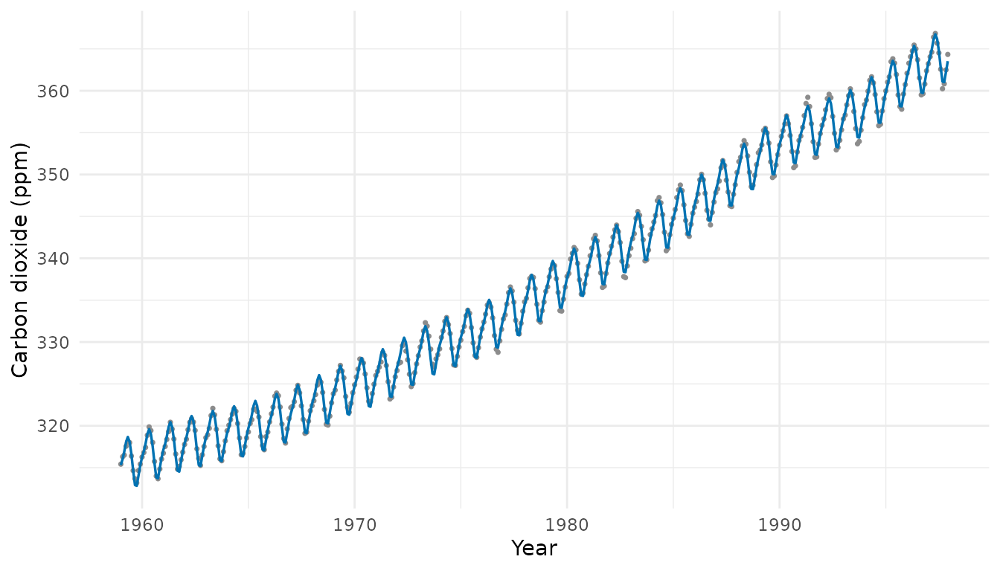

library("naboer")
library("tibble")
library("mgcv")
library("datasets")
have_ggplot2 <- requireNamespace("ggplot2", quietly = TRUE)
if (have_ggplot2) {
library("ggplot2")
}
have_gratia <- have_ggplot2 && requireNamespace("gratia", quietly = TRUE)
if (have_gratia) {
library("gratia")
}Fold objects store the data, the observations to assess and the
observations to omit from training. Observations used for training are
called the analysis set. naboer works out that set when you
ask for it by taking the observations that remain after omission.
To save memory, a time window can be stored as start and end positions in a shared time ordering. Folds with the same set of neighbours can share that set, for example when several observations come from the same site or taxon. For fixed stations, when a window requires observations to be close in both distance and elapsed time, the design stores time ranges for each nearby station.
Monthly atmospheric carbon dioxide
We will fit a model for the long-term trend and annual cycle in
atmospheric carbon dioxide at Mauna Loa, Hawaii. The co2
series distributed with R contains 468 monthly concentrations from 1959
to 1997, in parts per million. The copy in R includes three interpolated
values from 1964. This example uses a small data set to show how to
sample folds when scoring every neighbourhood would be costly. Documentation
for the Mauna Loa series.
Give each observation a date for defining the folds. The model will use the year as a decimal number for the trend and the month of the year for the seasonal cycle.
co2_monthly <- tibble(
date = seq(as.Date("1959-01-01"), by = "month", length.out = length(co2)),
year = as.numeric(time(co2)),
month = as.integer(cycle(co2)),
concentration = as.numeric(co2)
)Inspecting folds
Nearby months may have similar concentrations even after accounting for the trend and annual cycle. Make one fold per month, omitting the target month and up to three months on either side, and score the target month alone. This mimics estimating a missing value within the record when nearby measurements are also unavailable.
co2_folds <- neighbourhoods(
co2_monthly,
index = date,
temporal = temporal_window(time_span(3, "months", type = "calendar"))
)Inspect folds at the start, middle and end of the series. Each fold assesses one month. The middle fold omits seven months from training, while the folds at the ends omit four each.
as_tibble(co2_folds, folds = c(1, 234, 468))
#> # A tibble: 3 × 6
#> fold n_assessment n_omission n_analysis n_buffer omitted_fraction
#> <chr> <dbl> <dbl> <dbl> <dbl> <dbl>
#> 1 1 1 4 464 3 0.00855
#> 2 234 1 7 461 6 0.0150
#> 3 468 1 4 464 3 0.00855Use summary() to check the range of assessment and
omission sizes, the fraction of observations omitted, and how many
observations are never assessed. This avoids making a separate list of
row numbers for every fold.
diagnostics <- summary(co2_folds)
diagnostics[c("assessment_size", "omission_size", "omitted_fraction", "unassessed")]
#> $assessment_size
#> [1] 1 1
#>
#> $omission_size
#> [1] 4 7
#>
#> $omitted_fraction
#> [1] 0.008547009 0.014957265
#>
#> $unassessed
#> [1] 0If you need the actual row numbers, use
membership = TRUE with as_tibble() for
assessment and omission, or call assessment_indices(),
omission_indices() or analysis_indices()
directly. Supply folds to limit the result to the folds you
need. Asking for every fold can use much more memory than storing the
design. With ggplot2 loaded, you can plot the observation
roles in a single fold with
autoplot(co2_folds, folds = 1).
Exporting to mgcv
mgcv takes a list called nei. It contains
all the omission and assessment row numbers in long integer vectors,
along with two vectors marking where each fold ends. The size depends on
the total number of entries across folds, so a compact fold object can
still produce a large export. as_nei() checks the integer
index limit and estimates the size of these vectors before creating
them.
Choose 120 folds at random for smoothness selection. Here there is
one fold per row, so draw the fold numbers from the row count. Use the
data returned by fold_data() to keep the model rows aligned
with the fold indices.
co2_data <- fold_data(co2_folds)
set.seed(42)
sampled_folds <- sort(sample.int(nrow(co2_data), size = 120))Pass the selected fold numbers to as_nei() as
sample. Set a memory limit of 100 MiB for this export, then
count the entries in each vector. The default limit is 1 GiB and can be
changed with the naboer.max_bytes option or for one call
with max_bytes.
co2_nei <- as_nei(co2_folds,
sample = sampled_folds, data = co2_data, max_bytes = 100 * 1024^2
)
lengths(co2_nei)
#> a ma d md sample
#> 3264 468 468 468 120The sample vector has the 120 fold numbers to score. The
assessment vector d still lists all 468 target months, and
the omission vector a has 3,264 entries because each month
is omitted in several folds. The vectors ma and
md mark the ends of all 468 folds. bam() needs
the complete nei structure even when it scores only a
sample.
With mgcv 1.9-4, use explicit fold numbers when any fold omits more
than one row. From mgcv 1.9-5, you can also supply a count such as
sample = 120L. Leave sample unset to use every
fold.
The memory estimate covers the omission and assessment indices and their endpoints. Leave room for the rest of the R session and for temporary memory used during export. A forecasting fold can omit every observation after its forecast origin. The same observations can be omitted at many origins, so the export can grow with both the number of observations and the number of origins.
Fitting with sampled neighbourhoods
Fit the model with bam(), using a smooth for the trend
and a cyclic smooth for the annual cycle. Placing the ends of the
seasonal smooth at 0.5 and 12.5 makes it wrap smoothly from December
into January. With method = "NCV" and
discrete = TRUE, bam() chooses smoothness
using the 120 selected folds. The fitted model uses all 468
observations.
co2_fit <- bam(
concentration ~ s(year, bs = "cr", k = 20) + s(month, bs = "cc", k = 12),
data = co2_data, knots = list(month = c(0.5, 12.5)),
method = "NCV", nei = co2_nei, discrete = TRUE, na.action = na.fail
)Use gratia’s add_fitted() to put the fitted
concentrations alongside the observations.
co2_curves <- add_fitted(co2_data, co2_fit, value = "fitted_ppm")Plot the fitted concentrations as a blue line and the observations as grey points. The line shows the annual cycle superimposed on the rise in carbon dioxide over the record.
ggplot(co2_curves, aes(x = date)) +
geom_point(aes(y = concentration), colour = "grey55", size = 0.6) +
geom_line(aes(y = fitted_ppm), colour = "#0072B2", linewidth = 0.6) +
labs(x = "Year", y = "Carbon dioxide (ppm)") +
theme_minimal()
The sample size is for illustration. To see whether it is large
enough for your data, compare the fitted smooths using larger samples or
all folds. Sampling reduces the cost of scoring folds. That cost also
increases with the number of observations omitted per fold, because the
matrix that bam() must invert for each neighbourhood grows
with the omission size. Large blocks can be slow to fit even when the
exported vectors fit in memory. (mgcv
documentation for bam())
Exporting to rsample
as_rset() exports the training and assessment row
numbers for each split. In a leave-one-out design with one million rows,
every split has 999,999 training rows. The training indices alone would
require about 4 TB of memory. as_rset() checks its own
max_bytes limit, which also defaults to 1 GiB. The estimate
covers the index vectors. The rsample split objects and
data need additional memory.
Reproducible benchmarks
The benchmark scripts cover million-row time series, fixed monitoring stations, moving locations, polygon data and comparisons between approximate and exact refits. These scripts run separately from routine CRAN tests. (Benchmark scripts)
When comparing runs, record the data size, how many observations each fold includes, the sizes of the fold object and export, and the elapsed time. Record the hardware and the versions of R and its packages. Specify whether the peak is for memory managed by R or for the whole process. Where possible, check neighbourhoods for a sample of observations against a direct calculation.
The benchmarks also test whether memory limits catch designs with large neighbourhoods before allocation. Two designs can have the same number of rows and very different export sizes, depending on how many neighbours each observation has.